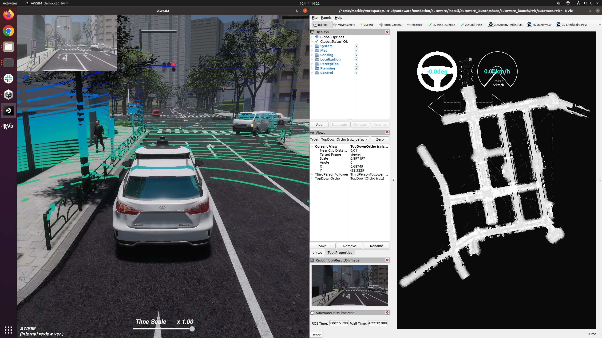
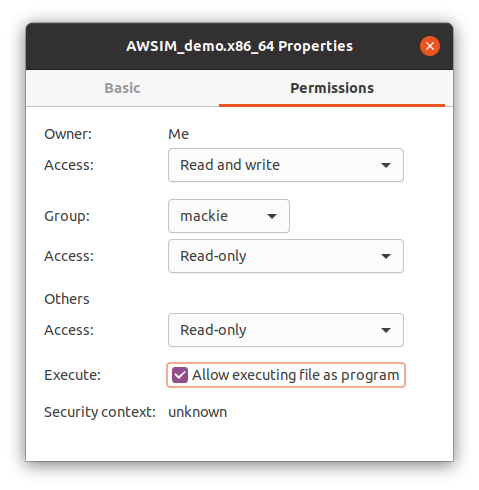
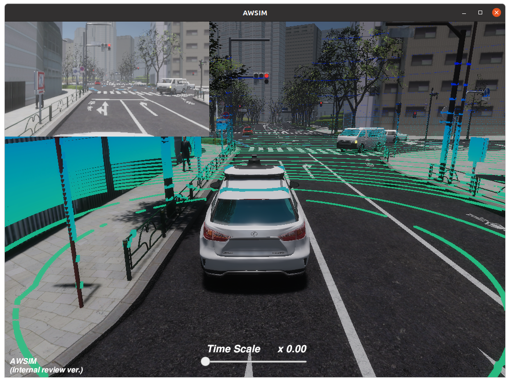
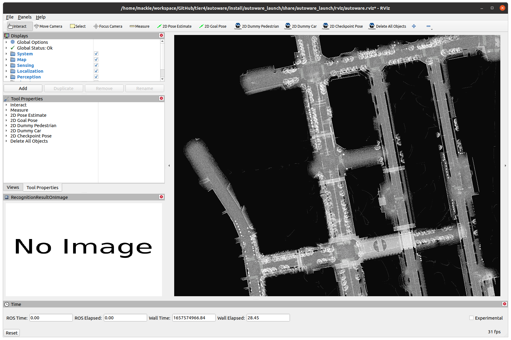
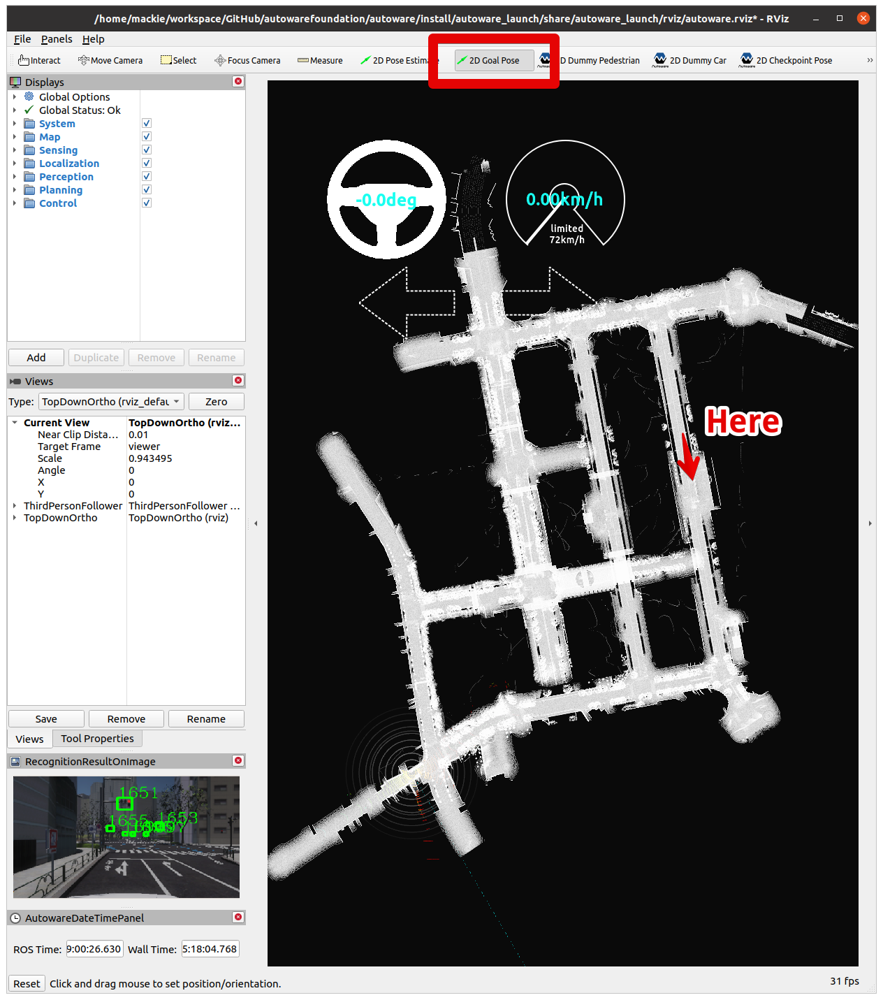
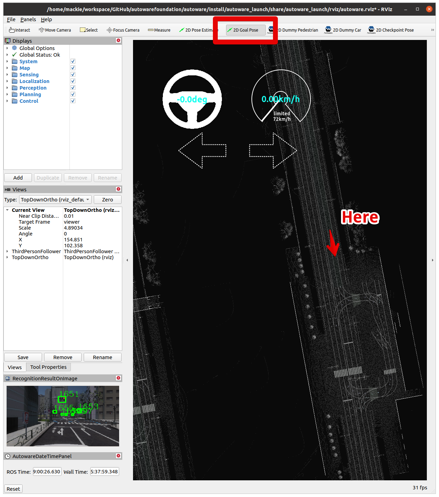
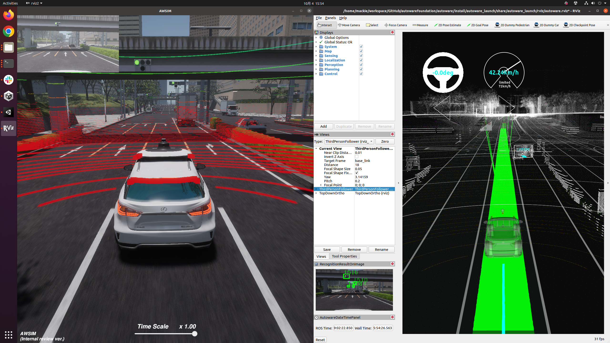

Quick Start Demo
Below you can find instructions on how to setup the self-driving demo of AWSIM simulation controlled by Autoware. The instruction assumes using the Ubuntu OS.

Demo configuration
The simulation provided in the AWSIM demo is configured as follows:
| AWSIM Demo Settings | |
|---|---|
| Vehicle | Lexus RX 450h |
| Environment | Japan Tokyo Nishishinjuku |
| Sensors | Gnss * 1 IMU * 1 LiDAR * 1 Traffic camera * 1 |
| Traffic | Randomized traffic |
| ROS2 | humble |
Prerequisites
Warning
If you use Ubuntu 20.04 and ROS 2 Galactic version, please reffer to v1.0.2 QuickStartDemo documentation.
PC specs
Please make sure that your machine meets the following requirements in order to run the simulation correctly:
| Required PC Specs | |
|---|---|
| OS | Ubuntu 22.04 |
| CPU | 6cores and 12thread or higher |
| GPU | RTX2080Ti or higher |
| Nvidia Driver (Windows) | >=472.50 |
| Nvidia Driver (Ubuntu 22) | >=515.43.04 |
Localhost settings
The simulation is based on the appropriate network setting, which allows for trouble-free communication of the AWSIM simulation with the Autoware software.
To apply required localhost settings please add the following lines to ~/.bashrc file.
export ROS_LOCALHOST_ONLY=1
export RMW_IMPLEMENTATION=rmw_cyclonedds_cpp
if [ ! -e /tmp/cycloneDDS_configured ]; then
sudo sysctl -w net.core.rmem_max=2147483647
sudo ip link set lo multicast on
touch /tmp/cycloneDDS_configured
fi
Start the demo
Running the AWSIM simulation demo
To run the simulator, please follow the steps below.
-
Install Nvidia GPU driver (Skip if already installed).
- Add Nvidia driver to apt repository
sudo add-apt-repository ppa:graphics-drivers/ppa sudo apt update - Install the recommended version of the driver.
sudo ubuntu-drivers autoinstall - Reboot your machine to make the installed driver detected by the system.
sudo reboot - Open terminal and check if
nvidia-smicommand is available and outputs summary similar to the one presented below.$ nvidia-smi Fri Oct 14 01:41:05 2022 +-----------------------------------------------------------------------------+ | NVIDIA-SMI 515.65.01 Driver Version: 515.65.01 CUDA Version: 11.7 | |-------------------------------+----------------------+----------------------+ | GPU Name Persistence-M| Bus-Id Disp.A | Volatile Uncorr. ECC | | Fan Temp Perf Pwr:Usage/Cap| Memory-Usage | GPU-Util Compute M. | | | | MIG M. | |===============================+======================+======================| | 0 NVIDIA GeForce ... Off | 00000000:01:00.0 On | N/A | | 37% 31C P8 30W / 250W | 188MiB / 11264MiB | 3% Default | | | | N/A | +-------------------------------+----------------------+----------------------+ +-----------------------------------------------------------------------------+ | Processes: | | GPU GI CI PID Type Process name GPU Memory | | ID ID Usage | |=============================================================================| | 0 N/A N/A 1151 G /usr/lib/xorg/Xorg 133MiB | | 0 N/A N/A 1470 G /usr/bin/gnome-shell 45MiB | +-----------------------------------------------------------------------------+
- Add Nvidia driver to apt repository
-
Install Vulkan Graphics Library (Skip if already installed).
- Update the environment.
sudo apt update - Install the library.
sudo apt install libvulkan1
- Update the environment.
-
Download and Run AWSIM Demo binary.
-
Download
AWSIM_v1.1.0.zip. -
Unzip the downloaded file.
-
Make the
AWSIM_demo.x86_64file executable.Rightclick the
AWSIM_demo.x86_64file and check theExecutecheckbox
or execute the command below.
chmod +x <path to AWSIM folder>/AWSIM_demo.x86_64 -
Launch
AWSIM_demo.x86_64../<path to AWSIM folder>/AWSIM_demo.x86_64Warning
It may take some time for the application to start the so please wait until image similar to the one presented below is visible in your application window.

-
Launching Autoware
In order to configure and run the Autoware software with the AWSIM demo, please:
-
Download
map files (pcd, osm)and unzip them. -
Clone Autoware and move to the directory.
git clone https://github.com/autowarefoundation/autoware.git cd autoware - Switch branche to
awsim-stable. NOTE: The latestmainbranch is for ROS 2 humble.git checkout awsim-stable - Configure the environment. (Skip if Autoware environment has been configured before)
./setup-dev-env.sh - Create the
srcdirectory and clone external dependent repositories into it.mkdir src vcs import src < autoware.repos - Install dependent ROS packages.
source /opt/ros/humble/setup.bash rosdep update rosdep install -y --from-paths src --ignore-src --rosdistro $ROS_DISTRO - Build the workspace.
colcon build --symlink-install --cmake-args -DCMAKE_BUILD_TYPE=Release -DCMAKE_CXX_FLAGS="-w" -
Launch Autoware.
Warning
<your mapfile location>must be changed arbitrarily. When specifying the path the~operator cannot be used - please specify absolute full path.source install/setup.bash ros2 launch autoware_launch e2e_simulator.launch.xml vehicle_model:=sample_vehicle sensor_model:=awsim_sensor_kit map_path:=<your mapfile location>
5. Let's run the self-Driving simulation
-
Launch AWSIM and Autoware according to the steps described earlier in this document.
-
The Autoware will automatically set its pose estimation as presented below.

-
Set the navigation goal for the vehicle.  
-
Optionally, you can define an intermediate point through which the vehicle will travel on its way to the destination.
 The generated path can be seen on the image below.
The generated path can be seen on the image below.

-
Enable self-driving.
To make the vehicle start navigating please engage it's operation using the command below.
cd autoware
source install/setup.bash
ros2 topic pub /autoware/engage autoware_auto_vehicle_msgs/msg/Engage '{engage: True}' -1

The self-driving simulation demo has been successfully launched!
6. Troubleshooting
In case of any problems with running the sample AWSIM binary with Autoware, start with checking our Troubleshooting page with the most common problems.